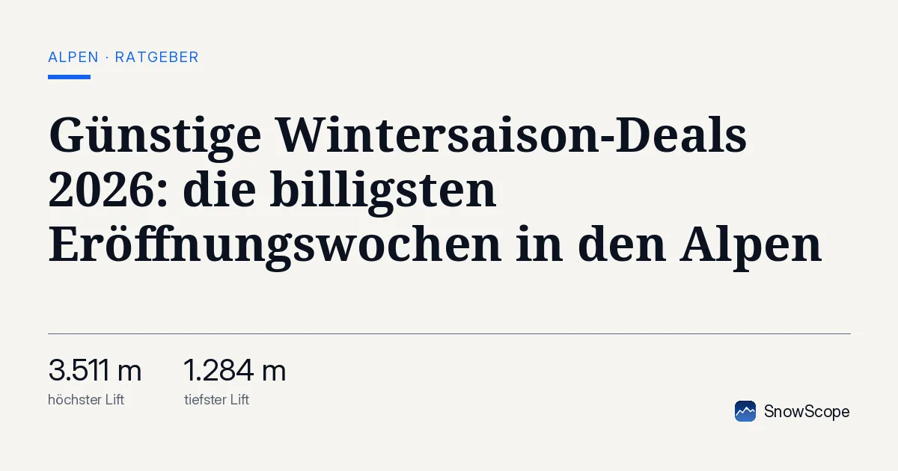

Günstige Wintersaison-Deals 2026: die billigsten Eröffnungswochen in den Alpen
Die günstigsten Tage der Skisaison sind die ersten. Valloire-Valmeinier eröffnet am 5. und 6. Dezember 2026 mit einem 20-EUR-Pass, Les 2 Alpes verkauft sein Eröffnungswochenende am 28. und 29. November für 42 EUR, und Les Orres verlangt vom 5. bis 11. Dezember 34 EUR pro Tag. Wir haben die besten Saisonstart-Angebote in einem Kalender zusammengefasst und geprüft, wie viel Schnee zu diesen Terminen normalerweise liegt.
Die Live-Schneeprognose für Les Deux Alpes in der SnowScope-AppSchneehöhen, Pulverschnee-Alarme und 3D-Karte, gratis.
Ende November: das erste Wochenende auf Schnee
Les 2 Alpes startet die Saison am 28. und 29. November 2026 mit einem Erwachsenen-Tagespass für 42 EUR, gegenüber 68 EUR für das normale flexible Ticket. Der Gletscher über dem Ort ist der Grund, warum so früh eröffnet werden kann: Auf mittlerer Höhe, 2.397 m, zeigt unsere Schneehistorie aus 46 vergangenen Wintern 24 cm in einem durchschnittlichen November, und weiter oben liegt deutlich mehr.
Livigno startet seine Aktion am selben Wochenende. Vom 28. November bis 18. Dezember 2026 kostet ein Erwachsenentag 51,5 EUR und 6 Tage 258,5 EUR. Vom 19. bis 25. Dezember liegt der Tagespreis bei 66 EUR, und ab dem 26. Dezember bei 74,5 EUR.
Anfang Dezember: die echten Schnäppchen
Das Eröffnungswochenende von Valloire-Valmeinier am 5. und 6. Dezember 2026 ist das günstigste Angebot, das wir gefunden haben: 20 EUR für den Pass, Eisbahn inklusive. Der normale Tagespreis für den Winter liegt bei 54,9 EUR. Auf mittlerer Höhe steigt der Schnee im Ort normalerweise von 24 cm im November auf 67 cm im Dezember, weshalb das Eröffnungswochenende oft noch auf einer jungen Schneedecke läuft.
Les Orres arbeitet mit einem Preiskalender: 34 EUR pro Tag vom 5. bis 11. Dezember, 38,5 EUR vom 12. bis 18. Dezember und 45,5 EUR ab dem 19. Dezember. Montgenèvre bleibt bis zum 18. Dezember bei 45,5 EUR, danach bei 56 EUR. Im Aostatal verkauft Monterosa Ski online zu schwankenden Preisen: Der günstigste Tag, den wir gesehen haben, lag bei 40 EUR, der teuerste bei 71 EUR.
Die Woche vor Weihnachten: 6 Tage günstiger
Für eine ganze Woche ist Serre Chevalier der klassische Saisonstart-Deal: 276 EUR für 6 Tage von der Eröffnung bis zum 18. Dezember 2026, gegenüber 345 EUR vom 19. Dezember bis 1. Januar 2027. Livignos Aktion mit 258,5 EUR läuft bis zum selben Datum.
Der Schnee baut sich im Dezember normalerweise schnell auf. Auf mittlerer Höhe liegen in einem durchschnittlichen Dezember 77 cm in Les 2 Alpes, 64 cm in Montgenèvre, 57 cm in Serre Chevalier, 54 cm in Les Orres, 48 cm in Livigno und 35 cm in Monterosa Ski. Je später im Dezember du fährst, desto besser stehen deine Chancen.
So wählst du dein Saisonstart-Angebot
Wenn du sichergehen willst, dass du auch wirklich fährst, geh hoch hinaus: Les 2 Alpes Ende November oder Montgenèvre und Valloire-Valmeinier im Dezember. Wenn du die niedrigste Rechnung für eine Woche willst, sind Serre Chevalier und Livigno vor dem 18. Dezember die sichersten Optionen, mit großen Skigebieten, die mit zunehmendem Schnee immer mehr Pisten öffnen.
Monterosa Ski solltest du Tag für Tag im Blick behalten: Buche die günstigen Online-Preise nur nach einem ordentlichen Schneefall, denn der übliche Dezember ist dort am dünnsten von allen genannten Orten.
Übernachten passend zum Angebotstermin
Die Saisonstart-Wochen sind auch bei der Unterkunft am günstigsten – aber nur, wenn deine Nächte zum Angebot passen. Die Karte in diesem Artikel öffnet jeden Ort genau zu den Terminen seines Deals, mit Unterkünften unter 120 EUR pro Nacht: das Wochenende vom 27. bis 29. November für Les 2 Alpes, vom 4. bis 6. Dezember für Valloire-Valmeinier, vom 5. bis 11. Dezember für Les Orres und vom 12. bis 18. Dezember für Livigno und Serre Chevalier.
Die Eröffnungstermine hängen immer vom Schnee ab. Schau ein paar Tage vor der Abfahrt auf der Website des Skigebiets nach und kauf den Pass online, wenn er dort günstiger ist.
Tipps für Skifahrer
- Günstigstes Angebot: Valloire-Valmeinier, 20 EUR am 5. und 6. Dezember 2026.
- Erstes Wochenende auf Schnee: Les 2 Alpes, 42 EUR am 28. und 29. November 2026.
- Günstigste Woche vor Weihnachten: Livigno 258,5 EUR oder Serre Chevalier 276 EUR für 6 Tage, bis zum 18. Dezember.
- Immer den Eröffnungstermin prüfen: Er hängt vom Schnee ab.
Weitere Karten (externe Seiten)
Quellen und Nachweise
- Les 2 Alpes, official ski pass shop, opening weekend offer www.skipass-2alpes.com/fr/forfaits/ski
- Les 2 Alpes, official ski pass shop, prices 2026-27 www.skipass-2alpes.com/en/pricing
- Valloire, official ski pass shop (Galibier-Thabor), winter 2026-27 skipass.valloire.com/fr/
- Les Orres, official ski pass prices 2026-27 www.lesorres.com/forfaits-de-ski
- Livigno, official ski pass price list 2026-27 (PDF) www.livigno.eu/hubfs/tariffe_26-27.pdf
- Montgenèvre, official ski pass prices 2026-27 skipass.montgenevre.com/fr/tarifs-guichet
- Serre Chevalier, official booking site, ski passes 2026-27 reservation.serre-chevalier.com/achetez-vos-ski-pass-serre-chevalier-et-autres-prestations.html
- Monterosa Ski, official dynamic pricing page 2026-27 monterosaski.eu/en/tariffazione-dinamica-monterosa-ski-19318
Zu diesen Zahlen
Schneewerte: SnowScope-Schneehistorie, 46 vergangene Winter (1980-81 bis 2025-26) auf drei Höhen des Skigebiets, ein höhenkorrigiertes Modell der Vergangenheit (eine Schätzung für eine Fläche, keine Meldungen des Skigebiets). Lifte, Pisten und Anreise: die Quellen unten, geprüft am angegebenen Datum.
Diesen Bericht zitieren
Für Forschung, Lehre oder Presse: Zahlen und Grafiken sind unter CC BY 4.0 mit dieser Quellenangabe frei nutzbar.
SnowScope (2026), Günstige Wintersaison-Deals 2026: die billigsten Eröffnungswochen in den Alpen, https://snowscope.app/blog/de/2026/11/early-season-ski-deals-2026-cheapest-opening-weeks-alps.html, abgerufen am 2026-11-19
SnowScope (Atlas Labs). (2026, November 19). Günstige Wintersaison-Deals 2026: die billigsten Eröffnungswochen in den Alpen. SnowScope snow reports. https://snowscope.app/blog/de/2026/11/early-season-ski-deals-2026-cheapest-opening-weeks-alps.html
BibTeX
@misc{snowscope2026earlyseasonskideals2026c,
author = {{SnowScope (Atlas Labs)}},
title = {Günstige Wintersaison-Deals 2026: die billigsten Eröffnungswochen in den Alpen},
year = {2026},
month = nov,
howpublished = {\url{https://snowscope.app/blog/de/2026/11/early-season-ski-deals-2026-cheapest-opening-weeks-alps.html}},
note = {Published 2026-11-19 12:42 UTC; accessed 2026-11-19}
}· CC BY 4.0 · Methoden, Daten und Werkzeuge →
Les Deux Alpes: Schnee und Temperatur nach Höhe, dieser Winter vs letzter (Werkzeuge) →
Les Deux Alpes folgen
Gratis: eine Nachricht, wenn Neuschnee kommt, und jeden Morgen die Vorhersage.
Weitere Schneeberichte

Plane deinen Dezember-Trip 2026 nach Les Orres, indem du die wöchentlichen Skipasspreise mit unserer Schneehistorie aus 46 vergangenen Wintern vergleichst.

Valloire-Valmeinier bietet 131 km Pisten und eine 98 % Chance auf 30 cm Schnee auf halber Höhe bis Mitte Dezember.

Fahr Ski in Livigno für 51,50 EUR pro Tag vor dem 18. Dezember, wenn der Schnee am Gipfel in 100 % der vergangenen Winter 30 cm erreicht.